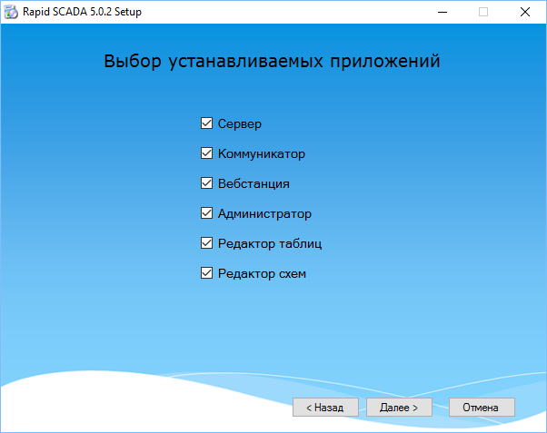
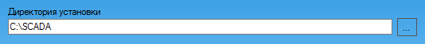

Установка программного комплекса должна запускаться из файла ScadaSetup.exe. Установку необходимо выполнять под учётной записью, которая обладает правами администратора на компьютере. Если установка происходит в операционной системе Microsoft Windows 7 и выше, необходимо с помощью контекстного меню запустить установочный файл ScadaSetup.exe от имени администратора или отключить уведомления о вносимых в компьютер изменениях в параметрах контроля учётных записей пользователей. Программа-установщик показана на рис. 1.
Для работы Rapid SCADA требуется наличие на компьютере среды выполнения Microsoft .NET Framework 4. Если среда выполнения не установлена, её установка будет запущена автоматически. Если установка производится на устаревшую ОС Windows XP или Windows Server 2003, то перед запуском ScadaSetup.exe необходимо дополнительно загрузить из Интернета и установить Microsoft .NET Framework 3.5 SP1.

Рис. 1. Программа-установщик
В процессе установки сначала предлагается выбрать инсталлируемые приложения, входящие в состав комплекса, а затем предлагается выбрать директорию для установки (рис. 2). Данная директория определяет расположение всего программного комплекса, в ней создаются поддиректории, необходимые для работы инсталлируемых приложений. Рекомендуется использовать директорию по умолчанию C:\SCADA\, чтобы упростить последующую настройку приложений.

Рис. 2. Выбор директории для установки
Чтобы использовать веб-приложение Вебстанция, на компьютере предварительно должен быть установлен веб-сервер Internet Information Services (IIS), который входит в набор компонентов Windows. Для установки IIS необходимо перейти в Панель управления > Программы > Включение или отключение компонентов Windows.
Для корректной работы веб-приложения Вебстанция должны быть установлены определённые компоненты веб-сервера IIS. На следующем рисунке показан выбор обязательных для работоспособности веб-приложения компонентов. При установке веб-приложения наличие данных компонентов автоматически проверяется программой-установщиком.